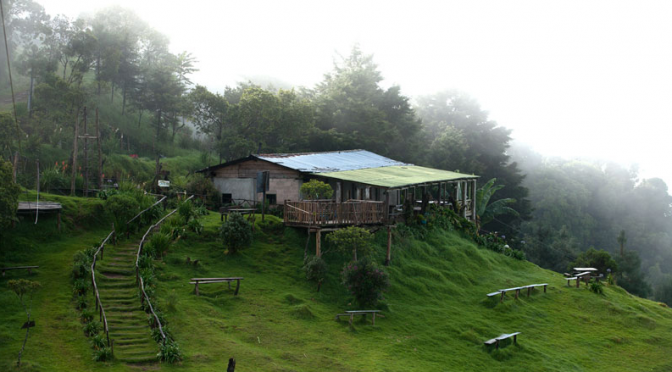
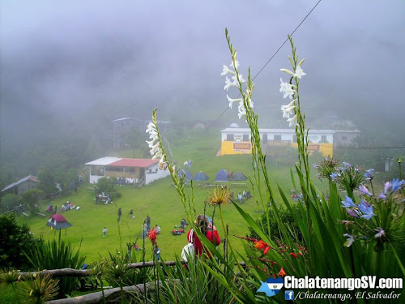
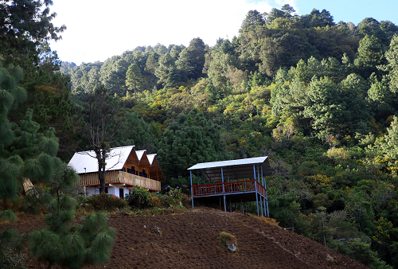
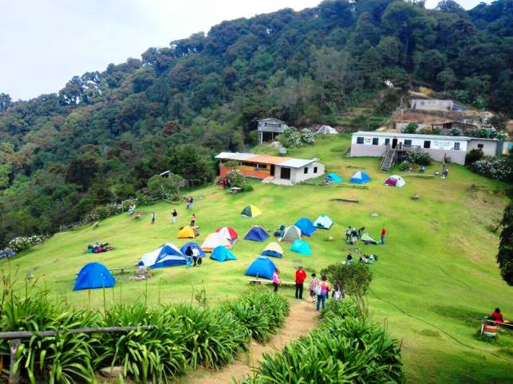
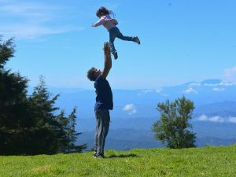

Cerro el Pital
Chalatenango



El Cerro El Pital es la cima más alta y elevada de El Salvador, con una elevación de 2,730 metros sobre el nivel del mar y una prominencia de 1,530 metros. Se encuentra ubicado en el extremo norte del país, específicamente en el municipio de San Ignacio, en el departamento de Chalatenango. Se trata de una montaña transnacional ubicada exactamente en la frontera entre El Salvador y Honduras, siendo también la tercera cima más alta de Honduras.
El Pital posee un bosque húmedo conformado por árboles como pino, roble, encino y ciprés, y su clima frío lo convierte en uno de los mejores lugares del país para sentir temperaturas bajas, que rondan entre los 3°C y los 10°C. Su vegetación incluye especies como el Pinus ayacahuite, el Abies guatemalensis y el Taxus globosa, plantas casi extintas para el país y únicas de esa zona. La parte más alta del cerro se denomina La Horqueta, el punto exacto donde El Salvador colinda con Honduras.
A El Pital acuden muchas personas con deseos de realizar ecoturismo, como camping, observación de fauna y flora, y caminatas por los diferentes senderos. También se puede escalar la Peña Rajada, un mirador natural sobre una inmensa roca desde la cual se observa San Ignacio, La Palma, partes de Honduras y Guatemala, así como otras áreas del oriente de El Salvador. La combinación de paisajes neblinosos, bosques de altura y vistas transfronterizas lo hacen único en todo Centroamérica
El ingreso cuesta $2.00 para adultos y $1.00 para niños, y el sitio cuenta con cabañas con capacidad desde 2 hasta 12 personas, además de área de acampar. Para llegar en transporte público, se puede tomar la ruta 119 en la Terminal de Oriente en San Salvador y viajar hasta San Ignacio, donde se aborda la ruta 509 hasta el cantón Río Chiquito. Desde allí se puede caminar o contratar un pick-up, recomendándose un vehículo con tracción 4x4 por la dificultad del tramo final

Alquiler de Cabañas
Tu cabaña en medio del bosque te está esperando. Desconéctate del mundo y reconéctate con lo que importa. El pino, el frío y la calma son tuyos.

Sendero al Mirador del Bosque
Camina entre árboles centenarios hasta llegar al mirador más secreto del bosque. Aquí el valle entero se rinde a tus pies.

Zona de Camping
Arma tu carpa, respira profundo y quédate a dormir bajo las estrellas. El camping aquí no es solo una actividad… es una experiencia que no olvidarás.

Spot de Fotos
Aquí hasta la alegría se siente más grande. Comparte la montaña con quienes más amas y crea recuerdos que duran toda la vida